من موقع يعرّف بالشركة إلى نظام يشغّل التدريب
مقترح لـThink Tank Strategists: ما في الموقع اليوم، وما يضيفه النظام الجديد، ثم الشاشات نفسها.
مقترح للنقاش · ديسمبر 2026 · كل ما فيه قابل للتعديل
نظام التدريب · عرض الشاشات
الموقع اليوم يعرّف بالشركة جيداً
هوية واضحة، وبرامج مشروحة، وطريقة عمل مكتوبة. هذا الأساس يبقى.
- 6صفحات: الرئيسية، من نحن، الخدمات، التدريب، المنهج، التواصل
- 4برامج تدريبية معروضة، عامة ومغلقة للجهات
- 1نموذج تواصل تنتهي إليه كل الأزرار
المصدر: قراءة thinktank.com.kw في 21 نوفمبر 2026.


لكن الزائر المهتم يتوقف عند نموذج التواصل
من يريد مقعداً في ورشة يمرّ اليوم بأربع محطات، والأخيرة خارج الموقع.
- يقرأ عن البرنامجصفحة التدريب بالإنجليزية
- يضغط «Request a Program»فيُنقل إلى صفحة التواصل
- يكتب رسالةالاسم، البريد، الاهتمام
- ينتظر الردخلال يومي عمل، ثم الباقي بالهاتف والبريد
مواعيد الدفعاتالرسومتسجيل ودفعمحتوى عربيحساب للمتدرب أو للجهةتحقق من شهادة
المقترح: نظام واحد من ثلاثة أقسام
لكل مستخدم بابه، وكلها تقرأ من البيانات نفسها.
للزائر وللعموم
الموقع الرئيسي
- البرامج والدفعات بمواعيدها ورسومها
- التسجيل والدفع بـKNET
- باب الجهات، والمقالات
- التحقق من الشهادة
للمتدرب ولمسؤول التدريب في الجهة
بوابة العميل
- دفعاته وجلساته وصفّه الإلكتروني
- شهاداته وحسابه ومدفوعاته
- للجهة: مقاعد، موظفون، عروض، تقرير
للدكتورة وحدها
بوابة الدكتورة
- ما ينتظر قرارها كل يوم
- البرامج ومحتواها، والدفعات والحضور
- الجهات والعروض والمدفوعات والشهادات
اليوم والجديد، بنداً بنداً
| الموقع اليوم | النظام الجديد | |
|---|---|---|
| اللغة | إنجليزي؛ زر العربية بلا محتوى | عربي أولاً، وإنجليزي كامل |
| المواعيد والرسوم | غير منشورة | لكل دفعة تاريخها ورسمها ومقاعدها الباقية |
| التسجيل | نموذج تواصل ورد خلال يومي عمل | تسجيل وحساب للمتدرب في دقائق |
| الدفع | لا يوجد في الموقع | KNET من الموقع، وإيصال فوري |
| الجهات | طلب برنامج عبر النموذج | حجز مقاعد، دعوة موظفين، وتقرير مشاركة |
| المحتوى | لا يوجد في الموقع | صف إلكتروني لكل برنامج: فصول فيها فيديو ومواد وواجب واختبار |
| الحضور | لا يوجد في الموقع | كشف لكل جلسة تؤشّر عليه الدكتورة |
| الشهادة | لا يوجد في الموقع | تصدر من النظام ويتحقق منها أي طرف برقمها |
القسم الأول
الموقع الرئيسي: رحلة الزائر
- يرى الدفعات القادمةبتاريخها ورسمها وكم مقعداً بقي
- يقرأ البرنامجلمن هو، وماذا يخرج به، وجدول جلساته
- يسجّل ويؤكد جوالهينشأ حسابه برمز تحقق قبل الدفع
- يدفع بـKNETيتأكد مقعده ويصله الإيصال
- يدخل بوابتهومن هنا يبدأ القسم الثاني
ما في هذا القسم
- البرامج والدفعات بالعربية والإنجليزية
- التسجيل والدفع دون مكالمة ولا بريد
- للجهات: طلب عرض لبرنامج مغلق، أو طلب حساب
- تفعيل الدعوة لموظف أسندت له جهته مقعداً
- المقالات والأبحاث
- التحقق من شهادة لأي طرف معه رقمها
شاشات الموقع الرئيسي
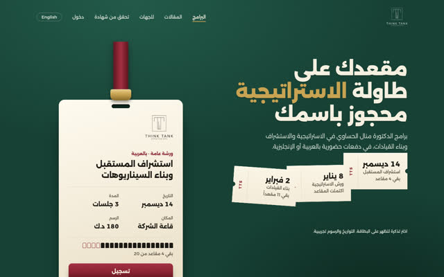
الرئيسيةالبطاقة والدفعات القادمة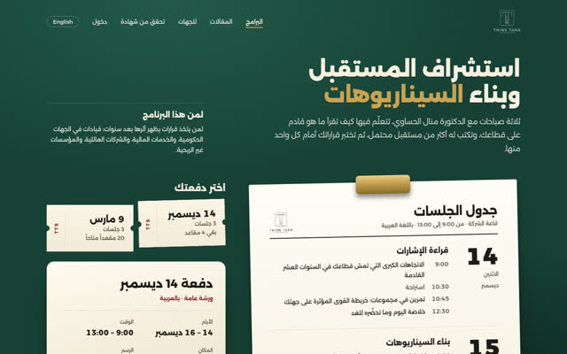
صفحة البرنامجالمحتوى وجدول الجلسات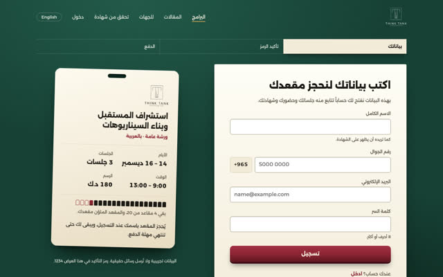
التسجيلالحساب ورمز التحقق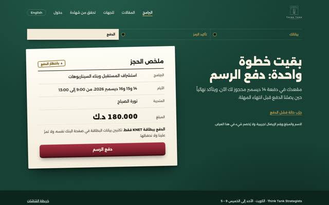
الدفعKNET والإيصال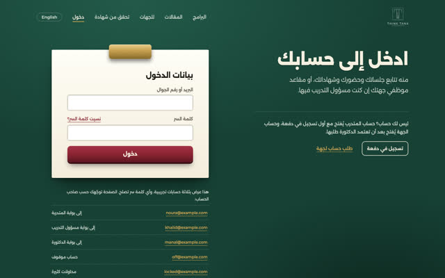
الدخوليوجّه كل مستخدم لبوابته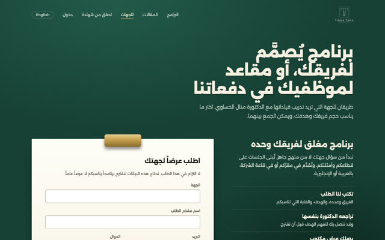
للجهاتطلب عرض أو طلب حساب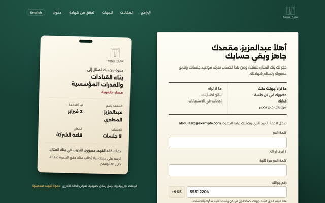
تفعيل الدعوةموظف دعته جهته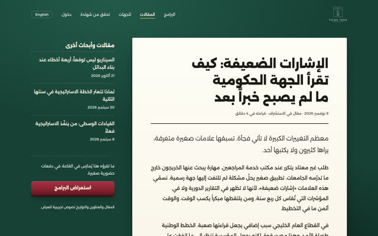
المقالاتمقال مفتوح وقائمة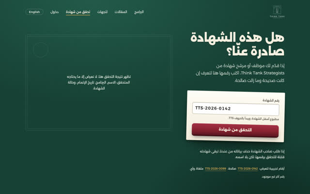
التحقق من شهادةصالحة، ملغاة، غير موجودة
القسم الثاني
بوابة العميل: رحلة المتدرب
- يرى دفعاته وجلساتهأين ومتى، وما حضره منها
- يدرس في صفّه الإلكترونيفصول فيها فيديو ومعلومات ومواد
- يسلّم الواجب ويؤدي الاختبارونتيجته فورية، وله محاولة ثانية
- يعبّئ الاستبيانمرة واحدة لكل فصل
- يستلم شهادتهبعد أن تغلق الدكتورة الدفعة
ما يراه العميل
- دفعاتي: التسجيلات والجلسات والإلغاء
- صفّي: الفصول والتقدّم والمواد
- شهاداتي: الصادرة، وما لم يصدر ولماذا
- حسابي: بياناته، الأمان، التنبيهات، مدفوعاته، خصوصيته
- ولا يرى بيانات أي متدرب آخر
شاشات المتدرب
القسم الثاني · الجهة
والعميل قد يكون جهة
- تطلب عرضاً لبرنامج مغلق، أو تحجز مقاعدفي أي دفعة عامة
- تدفع مرة واحدةرسم المقاعد، أو السعر المتفق عليه
- تسند كل مقعد لموظفتصله دعوة يفعّل بها حسابه
- تتابع وتستخرج تقريرهاحضور وغياب وشهادات، بلا نتائج اختبارات
القسم الثالث
بوابة الدكتورة: يومها في النظام
- تفتح على ما ينتظرهااسترجاع، حساب جهة، دفعة لم تبدأ
- تبني البرنامج ومحتواهفصولاً فيها فيديو ومواد واختبار
- تنشئ الدفعة وتبدؤهابتاريخها وسعتها ورسمها
- تؤشّر الحضور في كل جلسةوالنسبة تُحسب وحدها
- تغلق الدفعة وتصدر الشهاداتلمن استحقها، برقم يُتحقق منه
ما تراه الدكتورة، وحدها
- التشغيل: الدفعات، الحضور، الشهادات
- المحتوى: البرامج، الفصول، تصحيح الواجبات، المقالات
- العملاء: المتدربون، الجهات، طلبات العروض
- المال: المدفوعات والاسترجاع
- الصورة الكاملة: تقرير عبر كل الجهات
- وكل تغيير حساس يُكتب في سجل
التشغيل اليومي
المحتوى، والعملاء، والمال
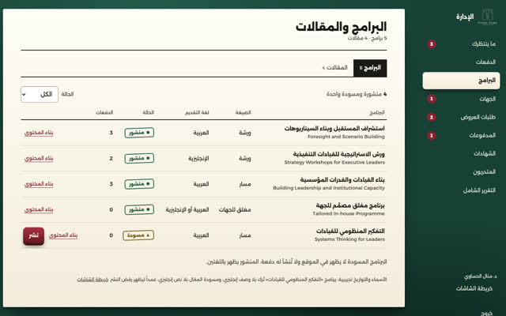
البرامج والمقالاتنشر برنامج أو مقال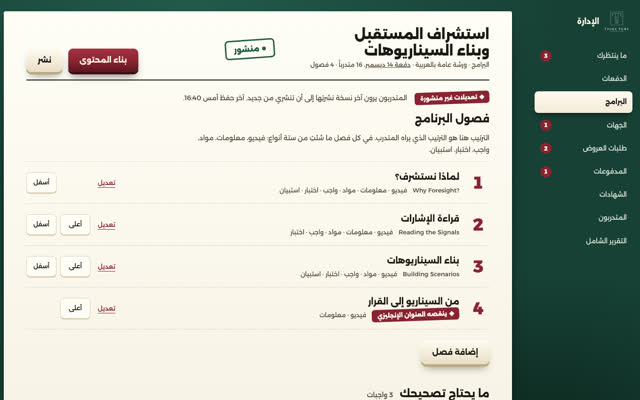
بناء المحتوىالفصول وعناصرها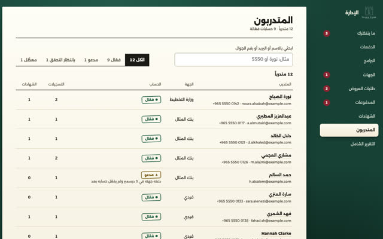
المتدربونالسجل، التعطيل، حذف البيانات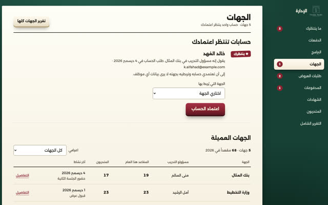
الجهاتاعتماد الحسابات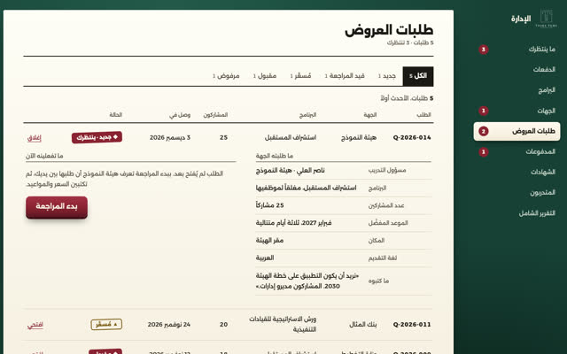
طلبات العروضمراجعة، تسعير، دفعة مغلقة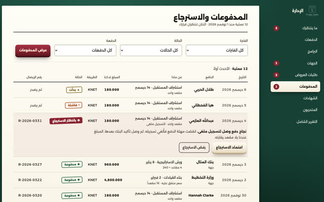
المدفوعاتالاسترجاع والإيصالات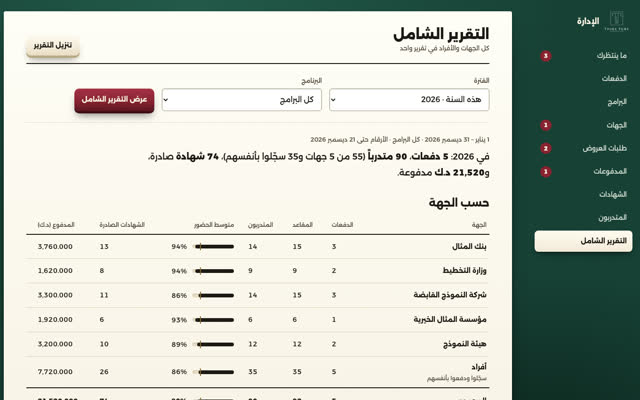
التقرير الشاملعبر الجهات والبرامجخمسة أمور تحتاج قرار الدكتورة
بنينا الشاشات على افتراضات مكتوبة. هذه أهمها، وكلها تتغير بكلمة منها.
- قراركما الجهة التي ترخّص نشاط التدريب، وهل تطلب شيئاً من النظام؟افترضنا: كشف الحضور والشهادات قابلان للتصدير، ولا شيء غيره
- قراركما نسبة الحضور التي تستحق بها الشهادة؟افترضنا 80%؛ في برنامج من 3 جلسات تعني حضورها كلها
- قراركحتى متى يُسترجع الرسم بعد الإلغاء؟افترضنا 7 أيام قبل بداية الدفعة
- قراركأي مزوّد لبوابة الدفع؟مؤجَّل؛ الشاشات تقول KNET فقط
- قرارككم برنامجاً ومتدرباً في السنة؟يحدد حجم الخادم ومتطلبات الأداء
والآن الشاشات نفسها
إحدى وثلاثون شاشة مترابطة في ثلاثة أقسام. الأسماء والمبالغ فيها تجريبية.